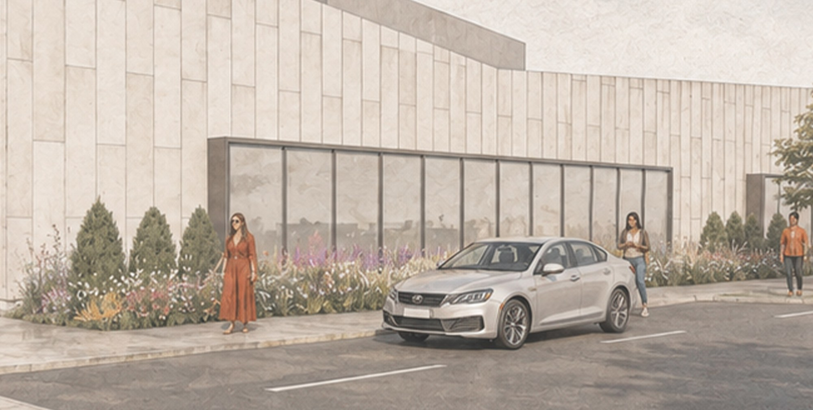
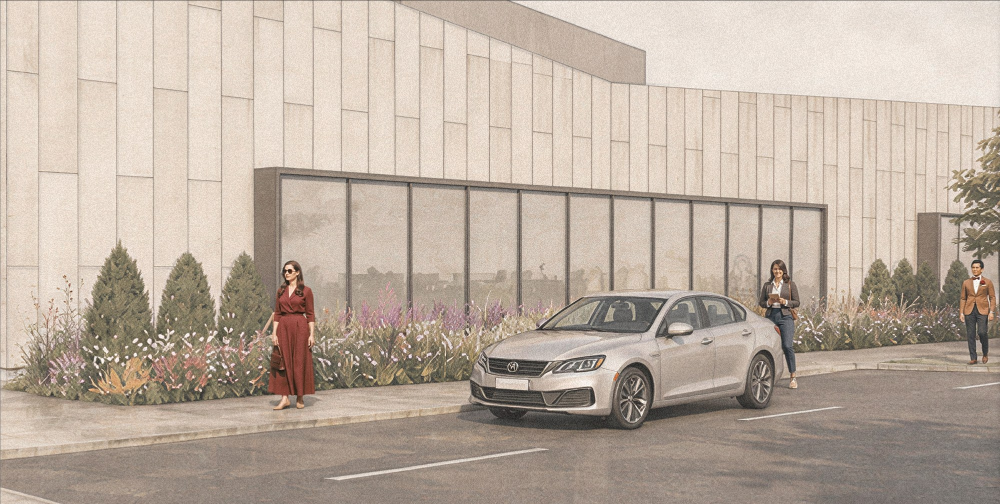
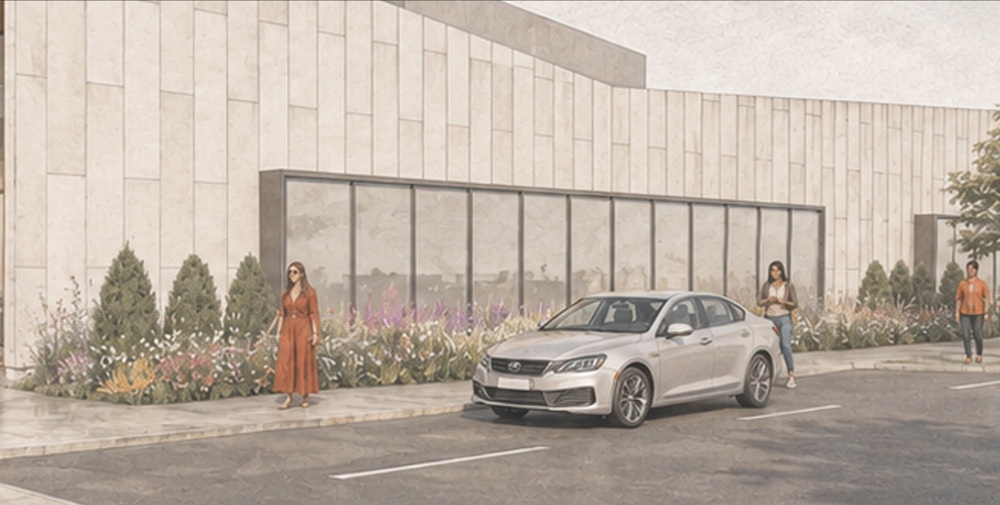
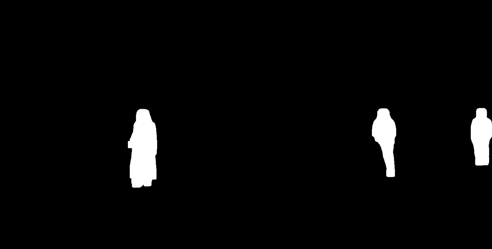
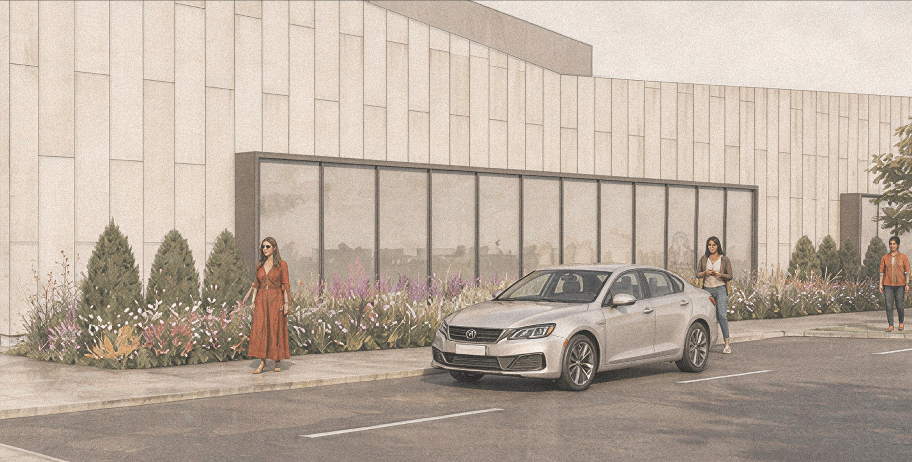
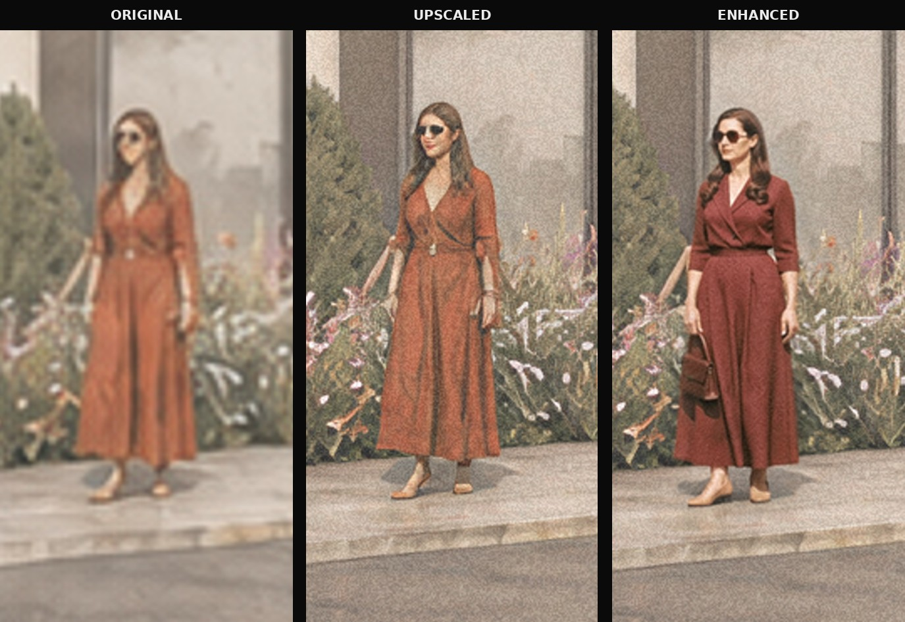
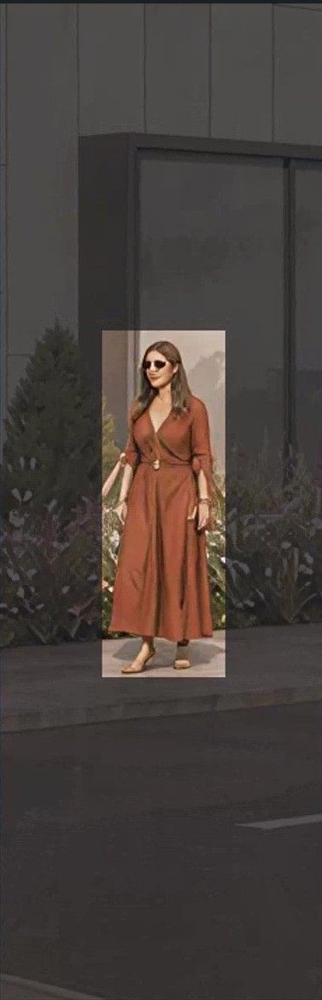
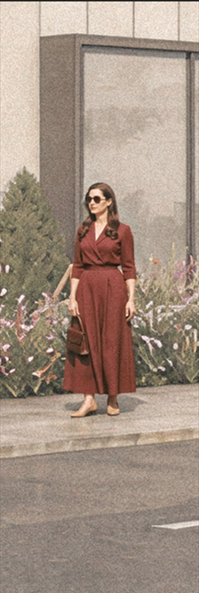

In a wide architectural rendering, the scale-figures—the people that give a scene life—often occupy only a few hundred pixels. That is too little information for a diffusion model to resolve a believable face, hands, or the fall of fabric, which is why AI visualizations so often betray themselves through soft, slightly melted figures.
Smart Figure Detailer is a computational workflow built to fix exactly that. A segmentation model detects every person in the frame and isolates them as clean masks. Each figure is cropped, upscaled to a proper working resolution, and passed through a detail pass that rebuilds facial features, clothing folds, and contact shadows—then composited back into the original image. The building, lighting, and composition stay untouched; only the people are quietly brought up to standard.


Enhanced OriginalDrag the handle to compare the original render with the detailed result. The scene is identical—only the figures change.

A wide exterior view. The figures read as placeholders—flat faces, vague clothing—because each one is only a sliver of the total pixels.

Segment Anything locates every person and returns a clean binary mask—white where the figures are, black everywhere else—so the workflow operates only on the people and leaves the architecture untouched.

The figures are cropped and upscaled to a working resolution—more pixels to paint into, but the detail pass hasn't run yet.
The detail pass rebuilds faces, fabric folds, and contact shadows, then composites the figures back into the original render at full quality.

The same figure tracked across the pipeline: soft and undefined in the original, sharper but noisy after upscaling, then fully resolved—face, fabric, and a grounded shadow—once enhanced.


Up close, the gain is clearest: defined features, readable posture, and a grounded shadow—without altering the person's placement or scale.